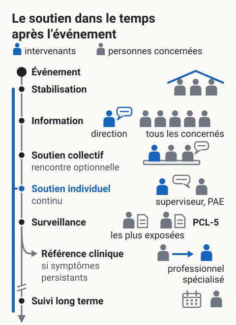

Soutien post-événement traumatique structuré
L'essentiel : Après un événement traumatique au travail (accident grave, décès, presque-incident majeur), un soutien structuré dans les premiers jours et semaines réduit significativement le risque de TSPT et de chronicisation. La démarche : sécuriser, informer, écouter, surveiller, référer. Pas de debriefing intrusif imposé : approche respectueuse du rythme de chacun.
Pourquoi structurer
Sans soutien structuré, après un événement traumatique
- 30 à 50 % des personnes exposées présentent des symptômes aigus dans les premiers jours
- 5 à 30 % développeront un TSPT durable selon la nature de l'événement
- Les chances de chronicisation augmentent si pas de soutien dans les premières semaines
Avec un soutien structuré : les symptômes aigus se résorbent souvent naturellement, les cas qui ont besoin de soutien clinique sont identifiés tôt.
Phases d'intervention
{kind=link}

Toucher l'image pour l'agrandirLe schéma montre l’ordre des phases, pas leurs délais (voir le tableau ci-dessous), et ne promet aucun effet. La rencontre de groupe reste optionnelle, sans debriefing imposé ; l’écoute individuelle reste disponible tout du long ; le PCL-5 dépiste sans poser de diagnostic.
Lire le schéma en texte
- Un axe du temps descend de l’événement (point noir, en haut) jusqu’à une flèche : il donne l’ordre des phases du tableau « Phases d’intervention », sans échelle ni délai ; une coupure marque le passage au long terme. En bleu, qui intervient ; en gris, les personnes concernées.
- Stabilisation : trois personnes sous un toit bleu, à l’abri (sécurité, soins immédiats, mise à l’abri émotionnelle) ; la page ne dit pas qui s’en charge, aucun intervenant n’est dessiné. Information : la direction s’adresse à cinq personnes, « tous les concernés » (faits objectifs sur l’événement, ressources disponibles, normalisation des réactions).
- Soutien collectif, rencontre optionnelle : un intervenant et deux participants à une table, l’un d’eux parle ; un espace pour exprimer, « pas debriefing intrusif ». Soutien individuel, continu : une barre bleue longe tout l’axe ; un superviseur ou le PAE écoute une personne qui parle (disponibilité, écoute, proposition d’aide).
- Surveillance : deux des personnes les plus exposées, chacune avec son questionnaire PCL-5, qui dépiste sans diagnostiquer. De là part un embranchement, la référence clinique, si symptômes persistants : une flèche bleue mène une personne vers un professionnel spécialisé.
- Suivi long terme, après la coupure : une personne et un calendrier, sans mois marqués, pour la vérification de la stabilisation. Après l’information à tous les concernés, les phases suivantes montrent moins de personnes grises : c’est l’« approche graduée » de la page, tout le monde n’a pas besoin du même niveau de soutien.
D’après le tableau « Phases d’intervention » de cette page : noms et ordre des phases, délais non repris ; intervenants et personnes concernées d’après les tableaux « Protocole minier recommandé » et « Rôle des acteurs miniers » ; questionnaire : PCL-5. Schéma d’organisation, axe sans échelle.
| Phase | Délai | Action |
|---|---|---|
| Stabilisation | Heures suivant l'événement | Sécurité, soins immédiats, mise à l'abri émotionnelle |
| Information | 24 à 48 h | Faits objectifs sur l'événement, ressources disponibles, normalisation des réactions |
| Soutien collectif | 24 à 72 h | Rencontre de groupe optionnelle, espace pour exprimer (pas debriefing intrusif) |
| Soutien individuel | Continu | Disponibilité, écoute, proposition d'aide |
| Surveillance | 4-6 semaines | Détection des symptômes persistants, mesure PCL-5 |
| Référence clinique | À 4-6 semaines si symptômes persistants | Vers professionnel spécialisé |
| Suivi long terme | 3, 6, 12 mois | Vérification de la stabilisation |
Bonnes pratiques
| Pratique | Détail |
|---|---|
| Approche graduée | Pas tout le monde n'a besoin du même niveau de soutien |
| Volontariat | Pas de debriefing imposé |
| Information factuelle | Combat les rumeurs, réduit l'incertitude |
| Normalisation | « Ces réactions sont normales après un tel événement » |
| Disponibilité | Soutien accessible plusieurs semaines, pas seulement le premier jour |
| Identification précoce | Surveillance des symptômes persistants |
| Coordination clinique | PAE, médecin du travail, ressources spécialisées |
| Soutien aux familles | Conjoints peuvent aussi être affectés indirectement |
Erreurs à éviter
- Debriefing critique imposé : la recherche montre qu'il peut être contre-productif s'il est intrusif et obligatoire (Rose et al., 2002).
- Ne rien faire : « ils s'en remettront tout seuls » mène à des cas qui auraient pu être prévenus.
- Une seule rencontre puis silence : le soutien doit s'étendre dans le temps.
- Pression à reprendre vite : forcer un retour rapide augmente le risque de TSPT.
- Diagnostiquer : laisser cela aux professionnels de santé mentale.
- Briser la confidentialité : protéger l'expérience individuelle.
Application en mines
Événements typiques en mine
| Événement | Risque TSPT |
|---|---|
| Accident mortel sur site | Élevé pour témoins, équipe immédiate |
| Accident grave avec blessé sérieux | Élevé |
| Effondrement, ensevelissement | Très élevé |
| Incendie, explosion | Élevé |
| Suicide d'un collègue | Élevé pour pairs |
| Sauvetage minier | Très élevé pour équipe de sauvetage |
Protocole minier recommandé
| Phase | Action |
|---|---|
| Heures suivant | Sécurité immédiate, soins médicaux, retrait du site si nécessaire |
| Jour 1-2 | Communication factuelle à tous les concernés, ressources annoncées |
| Semaine 1 | Rencontre collective optionnelle, présence d'intervenant |
| Semaines 2-4 | Disponibilité PAE, contacts individuels |
| Semaine 4-6 | Mesure PCL-5 pour personnes les plus exposées |
| 3-6 mois | Suivi des cas avec symptômes |
| Continu | Documentation, leçons apprises |
Rôle des acteurs miniers
| Acteur | Rôle |
|---|---|
| Direction | Communication, ressources, pas de pression au retour |
| Conseiller SST | Coordination, suivi |
| Superviseur | Présence, écoute, signalement |
| PAE | Soutien clinique individualisé |
| Médecin du travail | Évaluation des capacités, retour |
| Équipe de sauvetage minier | Programme de soutien spécifique (à risque accru) |
Documents et outils
| Document | Type | Source |
|---|---|---|
| Protocole post-événement traumatique | Gabarit | À élaborer en interne |
| PCL-5 et guide d'interprétation | Instrument | National Center for PTSD |
| Premiers secours psychologiques (OMS) | Guide PDF | who.int |
| Formation MHFA Premiers soins santé mentale | Programme | mhfa.ca |
| Études Rose et al. sur debriefing | Articles | Bibliothèques |
| Ressources spécialisées TSPT | Annuaire | Variables |
Voir le centre de ressources : 📁 Documents et outils et 🆘 Lignes d'aide et ressources de soutien.
Pour aller plus loin
Références
- Rose, S. et al. (2002). Psychological debriefing for preventing post traumatic stress disorder. Cochrane Database.
- OMS. Premiers secours psychologiques, guide pour les acteurs de terrain.
- National Center for PTSD. Ressources et formations.
Articles wiki connexes